刺客风帽
头盔赛季 8
遁形处决
隐身与治疗：
用充能近战击杀或使用终结技时，获得虚空隐身，回复 67 点生命值。
由终结技触发时，隐身持续时间额外 +3 秒。
隐身持续时间（括号内为终结技触发）：
・：7 秒（10）
・与：10 秒（13）
・及以上：13 秒（16）
小棒猪
搭配烈日火刀扇和升龙电猎勉强能玩，然而他们都有更好的金装选择
隐身与治疗：
用充能近战击杀或使用终结技时，获得虚空隐身，回复 67 点生命值。
由终结技触发时，隐身持续时间额外 +3 秒。
搭配烈日火刀扇和升龙电猎勉强能玩，然而他们都有更好的金装选择
飞刀强化：
装备权衡飞刀后，飞刀可第二次弹跳，追踪能力大幅增强。
强化飞刀的触发与持续：
连续造成 3 次精准命中（相邻命中间隔不超过 2.5 秒）获得「强化飞刀」，持续 10 秒。
生效期间，每次精准命中延长 5 秒，最长 30 秒。
强化飞刀的效果：
权衡飞刀伤害提高 300%[100%]，近战属性 +50；命中可眩晕势不可挡勇士并消耗强化飞刀增益。
PVP
强化星相「线织幽灵」：
幽灵获得 50%[25%] 伤害抗性，持续时间延长 67%，并附带 2 只停驻的线虫。
幽灵受到 40 点伤害时释放停驻的线虫。
幽灵被摧毁时释放全部停驻的线虫。
伤害抗性对自己造成的伤害无效。
处在自己的线织幽灵 15 米内时脱离雷达，由「隐匿」增益标示。
使用职业技能后 19 秒内，职业技能回复速度 ×0.5。
力量平衡能让自己打爆的线织幽灵产出线虫，可以通过缚丝猎大招诱捕猛击、棱镜猎金枪无限飞升产出大量分身，搭配神器集群战术打爆分身产出大量线虫，伤害意外的不错但是有点整蛊
超能结束时触发收招爆发：
在 10 米内触发无衰减爆炸并施加致盲（基础伤害 675 [?]，随反射次数提高至最高 2700 [?]）。
同时获得 4 层电弧武器激涌，持续 21 [16] 秒。
反弹沙漠尾王激光很帅
掉落炸弹：
使用职业技能时，掉落一枚离别赠礼，1.5 秒后爆炸（接触地面或敌方目标立即引爆），在 7.5 米内造成 440[120] 伤害。
虚空 10 秒压制和电弧 10 秒致盲都很不错
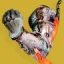
飞刀与元素效果：
感应爆炸飞刀引爆时施加 60+0 层灼烧，击杀时触发点燃。
近战能量回复：
感应爆炸飞刀尚未引爆期间，基础近战充能速率额外提高 625%?。
灼烧每次造成持续伤害时，回复 7%[?%] 近战技能能量；感应爆炸飞刀的固定额度能量获取倍率为 0.7×。
点燃击杀返还一次近战技能充能。
额外充能容量：
烈日飞刀与枯萎之刃可额外储存 +1 次近战充能。
处于棱镜时，飞刀戏法与枯萎之刃可额外储存 +2 次近战充能。
割草最终版本增加的灼烧技能回转几乎不用担心断近战，割草爆爆爆的感觉还是很解压的职业金卡利班合成的玩法也不错
超能重构：
将超能「黄金枪」替换为单发高伤版本。
黄金枪超能不再获得持续型超能的能量回复加成。
改造后的黄金枪：
造成 12984[?] 伤害，精准倍率 2×，命中即触发点燃。
该点燃伤害覆盖其他来源，恒定提高 10%。
（相比基础神射手黄金枪打出 3 次精准命中加点燃，精准命中伤害高 85%。）
用黄金枪击杀时：
返还 33%超能能量。
敌方目标爆炸，对 ? 米内的敌方目标造成最高 400[?] 伤害。
造成精准击杀时：
额外提供 1.5%–4.5% 的黄金枪超能能量，具体数值随敌方目标档位变化。
输出金枪头是猎人最常使用的脱手大金装，并且得益于金枪狙的强势
秒大怪在不携带金枪头时金枪被视为变身大，拥有三倍的回转速度，典型的使用案例：solo 梦魇根源老一使用跳舞机+赫沃斯托夫刷大招，每只折磨者都能攒出金枪换上金枪头秒杀
使用抓钩时：
获得织造铠甲，持续 10 秒，并回复 7 点生命值。
织造铠甲生效期间：
获得 ?% 受击抖动抗性；击杀回复 17 点生命值。
他的最大作用是贡献了职业金
常驻被动：
提供 +10 稳定性与 0.?× 举枪时长倍率。
施放职业技能时：
获得「幻金链甲」（持续 15 秒），装填全部武器并自动拾取 15 米内的弹药块（触发填装类武器 Perk）。
「幻金链甲」状态加成：
冲刺速度由 8.5 提高至 9 米/秒；滑铲距离由 6.5 提高至 8.5 米；瞄准移速惩罚降低 ?%。
提供 +35 稳定性与 +? 操控性。
与游戏内描述相反，实际不提供任何职业属性加成。
PVP
技能命中高亮与激涌：
用技能对、、勇士、或造成伤害时，获得 4 层与技能同元素的武器激涌，并高亮该敌方目标 16[11] 秒（不可刷新）。
击杀高亮目标：
击杀被高亮的敌方目标掉落一枚与分支职业同元素的能量拾取物。
他的最大作用是贡献了职业金
生成覆盖护盾：
生命值全满时，击杀或连续 4.5[15] 秒未受伤害即可开始生成虚空覆盖护盾。
每秒增加 6.6[1.1] 点并持续刷新覆盖护盾时长；再次受伤后停止生成。
覆盖护盾期间的武器收益：
任何覆盖护盾生效时，获得 +25 稳定性、+25? 操控性，精度锥范围缩小 5%。
武器对战斗人员的伤害提高 15%（使用热量机制的武器提高 20%）；该增伤与所有其他增伤叠加。
仓促脱身：
覆盖护盾生效期间击杀可预备「仓促脱身」；覆盖护盾耗尽时，「仓促脱身」使敏捷提高 +30?，持续 5 秒。
输出命运眷顾是高贵的额外伤害乘区金装，vog 套的出现解决了压力环境下虚空盾的持续问题，泡泡偃月的利用、虚空泰坦泡泡盾的强势都让这个金装在输出场景更加频繁地出现
清怪携带双绿时最合适的机制金装，多人低压环境虚空盾被击破的频率大幅降低，提供的额外武器面板和伤害都非常舒适，NPA/石板/数据盘虚空相关的神器进一步提高了其强度。带有护甲模组感应护盾的情况下，处于生命恢复状态/恢复/拾取能量球回血（碎裂能量球/治疗能量球）时终结会有概率直接回满蓝盾。
高难绑定 vog4 使命琢面虚空箭使用，最大化武器伤害
冲刺期间技能与护甲：
手雷与近战回复速度 ×2[基础手雷与近战回复速率额外 +100%]。
基础职业技能回复速率额外提高 100%[200%]。
每 3[6] 秒获得 1 层冰霜护甲。
[若无碎片「韵律之吟」，冰霜护甲无法叠到 1 层以上。]
冰霜护甲生效期间：
获得 3 层[1 层]冰影武器激涌。
有减伤也有技能回转，需要一直跑是他最大的问题，速通/超级跳回转技能有时会使用
使用职业技能时：
对 10 米内的敌方目标施加迷惑。
迷惑效果：
与战斗人员迷失方向 5 秒。
[音效短暂失真，短暂施加迷失方向，雷达消失 5 秒。]
PVP 偶尔会有人玩
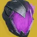
隐身延长与消逝暗影：
虚空隐身持续时间延长 2 秒。
每次获得虚空隐身均获得消逝暗影，持续 7 秒，最多 3 层；隐身期间倒计时暂停。
满层覆盖护盾：
叠到 3 层或已持有 3 层时再次获得虚空隐身，增加 +15 点虚空覆盖护盾，持续 7+3? 秒。
单人隐身虚空猎隐身步伐+捕猎者伏击可以轻松实现无限隐身，烟雾弹改版后棱镜也能实现无限隐身，虚空猎过机制可用，也常用于沙漠飞龙爬塔
高难高难搭配心影拥有不错的表现
电弧射弹释放：
使用星相「飞升」或「裂空打击」时，向前释放 3 枚追踪电弧射弹。
电弧射弹造成最高 200[40] 伤害并施加震颤；手持刀剑时可触发刀剑的命中类 Perk。
震颤叠层抗性：
对 15? 米内的敌方目标施加震颤时，获得 1 层伤害抗性，持续 10 秒，最多 4 层；再次施加刷新时长。
高难最适合电猎的机制日常金装；对棱镜猎来说如果只是正常使用是不如曲腹蛛之灵的，但他有个额外优势，那就是持刀飞升时释放的小球是算作刀剑伤害的，对此有多种有趣的应用：狼毒叠加纳米充能层数、光剑冲击核心施加 debuff（如烈日施加被视为光剑伤害的灼烧从而不断触发圣贤套技能回转），触发 886 的起源特性给予大量技能能量的同时触发切割能量球，噩兆的冷冻钢铁，毒鲉的燃烧野心尖锐收割。
清怪升龙电猎过机制使用
隐身结束触发陷阱：
虚空隐身结束时若身处敌方目标 15 米内，在自己脚下触发一枚陷阱炸弹（冷却 5 秒；与星相「捕猎者的伏击」不产生联动）。
超能「鬼灵利刃」加成：
处于鬼灵利刃超能期间，重击按命中与击杀数返还超能能量。
按命中与击杀累计的超能能量延长量：?%[?%]
每次脱离隐身时会在脚底释放一个短暂的烟雾弹，被视为近战所以也能触发焕光和战嚎炮管等等，常与潇洒行刑官搭配，然而由于存在内部冷却让本就可有可无的效果“雪上加霜”。对鬼刀只有击杀回复能量条的作用，更偏向 PVP
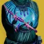
解除隐身获得增益：
结束虚空隐身时，获得 Perk「不稳定弹药」，持续 9[3] 秒。
隐身终结技与后备护盾：
处于虚空隐身时使用终结技，伤害提高 35%，持续 6 秒（不与强化增益叠加）。
同时，自己与 24 米内的盟友获得后备覆盖护盾。
后备覆盖护盾转化：
持有后备覆盖护盾时，基础职业技能回复速率额外 +500%，直到使用职业技能。
使用职业技能消耗后备护盾，获得 40 点虚空覆盖护盾，持续 10 秒。
清怪搭配神器不稳定神枪手对虚空猎来说是优秀的走机制金装
虚弱击杀释放烟雾：
装备虚空近战技能时，击杀处于虚弱的敌方目标，在其阵亡位置释放一团虚弱烟雾（机制上等同于立即引爆的陷阱炸弹）。
提供 30%虚空近战技能能量。
每次击杀虚弱的战斗人员会释放一个短暂的烟雾弹，但是这个烟雾弹不被视为近战，不存在冷却 CD，给予的近战回转可观，搭配潇洒行刑官+鼓舞（吃球回近战）可以刚好回转上鬼灵激涌。与一些自带易伤的武器搭配不错（杀手之牙/叛贼/心影/奇点利刃潇洒行刑官光剑等）
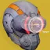
雷达与标记：
被动获得 +20 空中效率，机瞄时雷达仍然可见。
蹲下时雷达增强为 12 个扇区（常规雷达为 6 个）。
对战斗人员造成伤害，或打破护盾，标记命中的敌方目标 3 秒（穿墙可见）。
残血增伤：
敌方目标的生命值低于 30% 后，每再降低 1 个百分点，武器与技能对其造成的伤害提高 1%。
目标剩余 10% 生命值时，伤害提高 20%（计算时不计入护盾）。
Rush对 30% 以下血量的战斗人员根据血量呈线性的所有伤害 10%-30% 增伤，曾在第一次 solo 见证者 Rush 中使用，如今这种极端环境比较少；多在 PVP 出现
触发条件：
装备电弧近战时，受到近战伤害或用充能近战命中，为接下来 3 秒内的下一次近战命中提供交叉反击。
交叉反击效果：
该次近战伤害提高 400%，命中回复 40 点生命值，且该次近战造成电弧伤害。
近战改版加算后由于近战拳击基础数值太低，基本不会使用
持枪被动：
手持手炮时获得 +20 空中效率，滑铲距离由 6.5 米提高到 8.5 米。
举枪触发与叠层：
举起手炮获得非法改装枪套，持续 6 秒（换用非手炮武器立即移除）。
生效期间，对战斗人员造成直击伤害可累积非法改装枪套层数，最多 10 层。
举枪时获得 +100 操控性、0.6× 举枪时长倍率，精度锥范围缩小 30%。
伤害加成与例外：
每层使对战斗人员的直击伤害提高 45%，10 层时提高 +450%（无礼言论的直击伤害每层提高 +30%）。
异域武器「狂飙」的超量充能弹药、异域武器「隼月」的超因果射击，以及其他所有非直击伤害均不受加成。
对受幸运裤加成的射击具有 33% 伤害抗性。
运气用尽：
非法改装枪套到期或收枪时，若已达到 7 层以上，则进入「运气用尽」状态，持续 10 秒；期间不能再次触发非法改装枪套。
高难无爱爱莲娜搭配废墟石板/双增伤野兽国度搭配杀手公爵依旧有合格的表现，爱莲娜的破盾点燃能够吃到幸运裤增伤
输出无礼言论电弧复合能达到 5000+DPS 水平，可以用于打完重弹补输出
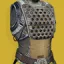
手雷强化：
电光手雷可多连锁一次，最多命中 5 名敌方目标，并对首个命中目标施加震颤。
碍于电光雷的伤害只能成为割草金装，最好搭配伏特子弹武器使用
闪身替换：
装备电弧或冰影超能技能时，闪身替换为位移（特技闪身不受影响）。位移的冷却与固定额度能量获取倍率按射手闪身计算。
使用职业技能：
快速位移最多 12 米，期间隐身且无敌。同时获得 1 层凌光偏转，持续 11 秒，最多 3 层。
凌光偏转收益：
电弧、冰影武器与异域武器「狼王」的伤害按层数提高：1 层 = 10% ｜ 2 层 = 21% ｜ 3 层 = 33%。
对受冰影减益影响的敌方目标，武器伤害额外提高 10%（与其他增益叠乘）。
生效期间，武器击杀回复 60%职业技能能量。
高难药剂神器风寒+冰冷伺候的组合实现了不依靠击杀的自回转闪身，满层 buff 提供对电冰武器以及狼王的 33% 额外乘区增伤加上冰影 debuff 目标的 10% 能够获得夸张的 46% 额外乘区，在裁决定论/末日先知混乱无序如此强势的版本吃到不少红利
割草电弧导体故我在是经典搭配，也有死亡信使、线圈等等玩法，一些速通场合下也会使用
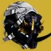
枯萎之刃命中与弹跳：
在第 1 次与第 3 次弹跳处生成一块小型冰影水晶，并提供固定 7.5%近战技能能量。
碎裂冰晶触发射弹：
用枯萎之刃碎裂一块冰影水晶时，在该水晶附近以 120° 夹角释放 3 枚冰影射弹。
冰影射弹命中处生成一块小型冰影水晶。
高难优秀的控场、清怪和自回转能力，造出的冰块会吸引战斗人员仇恨，是棱镜/冰影分支非常强力的金装
清怪同上
跑图造地形、超级跳/触发利刃专注
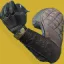
手枪被动属性：
手枪被动获得 +50 空中效率、+100 操控性与 +100 填装速度。
重伤切枪与弹药补满：
重伤时举起手枪，补满手枪弹匣，并使手枪伤害提高 100%[10%]；增伤期间的手枪击杀也会补满弹匣。
增伤持续时间：
仍处于重伤状态时不倒计时；护盾恢复后，增伤开始 5 秒倒计时。手枪击杀将倒计时刷新至 3 秒。
曾经有最终警告左键锁定右键点射 15 发的极限猴戏输出玩法，触发增伤条件过于苛刻，并且在双倍增伤 bug 修复后伤害跟不上。现在基本没有使用场景
引爆缠结与回收：
线织尖刺可弹向缠结，引爆后立即飞回。
接住该次返回的线织尖刺时，自动拾取一枚缠结（可触发元素拾取物联动）。
未接住时的爆炸：
若未接住引爆缠结后返回的线织尖刺，在自己周围触发缚丝爆炸。
爆炸在 9 米内造成 727[?] 点缚丝近战伤害（无距离衰减；受近战伤害加成影响并可触发近战相关效果，但不计为缠结伤害）。
普通尖刺回收加成：
接住未命中缠结的线织尖刺时，额外返还 25%近战技能能量，返还量不受近战属性影响。
贪婪 4 螺旋丸的伤害非常优秀，没有生存压力时可用
飞翼日蚀充能：
击杀可累积飞翼日蚀充能，最多储存 6 份（满 6 份后可投掷 2 次飞蛾手雷）。
每次击杀充能： = 1 ｜ = 2 ｜ 及以上与 = 3。
投出最后一只蛾笼后进入 6 秒冷却，结束后方可再次累积充能。
飞蛾目标判定：
飞翼日蚀命中后释放 2 只飞蛾，元素属性按 20 米内最近的 2 个目标决定（范围内无目标时默认释放虚空飞蛾）。
攻击敌方目标：
最近目标为敌方目标时释放电弧飞蛾，以约 10 米/秒追击，接触引爆。
电弧飞蛾造成最高 473[守护者 31｜构造体 201] 点电弧手雷伤害，并在 4 米半径内施加致盲。
保护盟友：
最近目标为盟友时释放虚空飞蛾，以约 25 米/秒追向盟友，接触后赋予 22.5 点虚空覆盖护盾。
清怪不祥之兆特殊联动，改版后也不会挤占掉原本的手雷，建议搭配药剂包神器使用，虽然本身弹药生成够高但是每盒弹药总伤较低，需要注意弹药经济管理
高难同上，致盲+虚空覆盖护盾能够提供优秀的生存能力，电飞蛾的索敌有小问题是减分项
弓箭被动与满蓄力保持：
被动为弓箭提供 +40 空中效率与 +10 蓄力时间（等同于蓄力时间大师杰作）。
弓箭可无限期保持满蓄力状态。
满蓄力递增增伤：
主要弹药弓箭达到满蓄力后再过 0.35 秒，每 0.5 秒提高一档伤害，2 秒后对战斗人员的直击伤害最高提高 200%。
狩猎箭头、毒素、冰影水晶、Perk「蜻蜓」与 Perk「爆炸箭头」等效果不受加成。
满蓄力保持 4 秒后该增伤消失。
在最终版本加强之后还是碍于弓箭的孱弱没有太多使用空间
近战充能与隐身抗性：
额外提供一次烟雾弹近战技能充能。
虚空隐身提供 50%[10%] 伤害抗性（抗性 4 层；超能期间不生效）。
赋予盟友隐身收益：
使盟友获得虚空隐身时，每名进入隐身的盟友提供 50%近战技能能量（4 名时共 200%），并使盟友开始回复生命值。
由自己赋予隐身的盟友共享该伤害抗性。
全队隐身常用于玻璃拱顶迷宫，虽然改版后有不错的团队辅助效果但没有太多上场空间
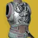
近战额外充能与同步恢复：
为烈日近战技能额外提供一次近战充能，且所有近战充能同时回复。
若最近 ? 秒内使用过近战技能，则不会同时回满全部充能（如使用赌徒闪身时两次充能一并回满）。
飞刀击杀增伤：
用飞刀击杀时，飞刀伤害提高 67% ｜ 133% ｜ 200%，持续 5 秒。
使用赌徒闪身刷新持续时间。
清怪近战增伤非常慷慨，多一层充能降低容错，是火猎优秀的机制与割草金装，可搭配雪上喷使用
莫比乌斯箭袋强化：
超能「莫比乌斯箭袋」每次施放可多发射一轮，持续时间延长 4 秒。
输出仅限搭配需求层级的输出选择
电弧法杖命中与叠层：
电弧法杖造成伤害时施加震颤；命中时获得 1 层突触接合，持续 5 秒，最多 3 层。
连招倍率：
掌击爆发（轻-轻-重）的伤害加成为普通法杖攻击加成的 1.5 倍。
输出电猎配合 NPA 雷霆反击（30%）使用，近身输出非常优秀的伤害变身大；利用风寒获得冰霜护甲后切到护盾粉碎神器（50%）拥有更高的上限，但是操作比较复杂
高难需要相当程度技术基础的高难电猎解法之一，搭配维王者之剑能够单通终极征服炽天使
施放超能闪电与增幅：
施放超能「风起云涌」时，? 米内的敌方目标被闪电击中，受到 650[?] 伤害并被施加震颤；自己与 ? 米内的盟友获得增幅。
搭配铁旗套在怪堆中一次可以把大招将近回满
主要武器被动与腰射收益：
被动获得 +20 空中效率。腰射主要武器时，获得 +30 敏捷、+5 射程与 +30 稳定性；精度锥范围变化为 −30?%，精准判定角度增加 +2?°，瞄准辅助与伤害衰减距离增加 +20%。
异域武器「亡者传说」、异域武器「遗言」与异域武器「汤米的火柴盒」不获得伤害衰减距离加成，精度数值另有调整。
精度锥数值无法实测，但加成足以抵消任何精度锥扩张。
职业技能满额额外储存充能：
职业技能能量已满后，连续用主要武器击杀（相邻击杀间隔须不超过 6 秒）可累积计数。
每次击杀增加计数： = 34% ｜ 及以上 = 100% ｜ = 100%。
累计达到 100% 后获得一次额外职业技能充能，最多额外储存 2 次。
清怪光辉跳舞机是猎人最强大的顶级机制金装，常见于单绿的使用场景，单人、多人、首日、日常都有他的身影出现，搭配焕光闪身飞升绿人为团队提供优秀的辅助
星相联动：
与星相「冬日之触」同时装备时：
冰影水晶由中型变为大型。
减速场半径再 +50%（合计 +75%）。
强化暮域手雷：
减速场半径 +25%，并在中心生成一块中型冰影水晶。
身处减速场内效果：
场内敌方目标造成的伤害降低 50%[20%]。
自己与盟友立刻获得 1 层冰霜护甲，之后每 0.5 秒再获得 1 层。
在门徒 dayone 迎来了他的高光时刻，此后一蹶不振，如今他的作用是贡献了职业金
触发条件与后备填装：
用充能近战或抓钩近战击杀，或使用终结技时，填装收起的武器并获得噩梦激励，持续 7 秒。
噩梦激励效果：
伤害提高 35%[20%]，获得 +? 操控性与 +50 空中效率（不与强化增益叠加）。
切枪与刷新机制：
获得噩梦激励后举起另一把武器，刷新持续时间。
生效期间用武器击杀重新激活判定，使下一次切换武器时也能获得伤害与属性加成。
适合没有焕光并且近战有击杀和回转能力的分支使用，比如电、冰、缚丝，会有一些小众场景下的使用
超能「利刃弹幕」能量返还：
烈日近战击杀按目标档位返还 2.5%–5% 超能能量。
超能命中与击杀按数量与档位返还最多 50% 超能能量（不受超能属性影响： ≈ 20% ｜ 50%）。
增伤适用与总伤：
超能增伤仅作用于飞刀直击、爆炸与点燃。
单开对总伤提高约 140%；搭配星相「击败他们」总伤由约 21K 提高至约 26K（约 +25%）。
输出加拉诺火刀是目前伤害最高的脱手大，结束时还会返还一半的大招能量，搭配松身裤或噬星者之鳞 vog 套可以快速转出下一个大招，强大且常用的输出选择
弹跳手雷充能与命中回能：
额外获得一次弹跳手雷充能，子机追踪敌方目标的能力大幅增强。
弹跳手雷每次命中回复 4.2%[1.4%]手雷技能能量并获得 1 层电光充能（直击伤害与爆炸伤害分别计为命中）。
此外，每获得 1 层电光充能，回复 ?%手雷技能能量。
满层电光充能爆发：
达到 10 层电光充能时，为自己与 ? 米内的盟友回复 ? 点生命值，并回复约 40%手雷技能能量。
下一枚投出的弹跳手雷获得强化，多弹跳一次；在第 1、2 次弹跳时，各额外释放 5 枚追踪弹。
高难优秀自洽的金装机制，拯救了电猎的高难玩法，使用庆典飞行等高频叠加电光充能的武器搭配废墟石板能够做到无限投掷弹跳雷，电光充能的无限获取也解决了近战技能的回转问题。与松身裤类似，需要战斗人员有一定的血量才能实现良好的技能回转
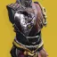
额外职业技能充能：
额外提供一次职业技能充能。
被动收割者效果：
被动获得一份模组「收割者」的效果。
多一层闪身和产球，仅此而已
闪身触发与填装：
使用职业技能时，填装全部武器，拾取 15 米内的弹药块，并触发填装类武器 Perk。
同时，自己与 15 米内的盟友获得 1 层紧身，持续 15 秒。
叠层与属性加成：
紧身生效期间再次闪身增加 1 层并刷新时长，最多 5 层（刷新时范围内盟友层数与自己对齐）。
直击命中返还能量：
紧身生效期间，连续造成直击伤害可累积命中计数（相邻命中间隔须不超过 3 秒）；累计达到 100% 时回复 20%职业技能能量。
输出驱逐引擎+裁决定论+混乱无序，配合充沛和面面俱到回转火刀；还有千语火粪坑的玩法，但总的来说前者更优秀
高难除了电冰分支有更好的选择，松身裤在棱镜、火、虚空、缚丝分支上都是强度顶级的配装。分为迷失信号/驱逐引擎的杀手公爵分支和庆典飞行的废墟石板/女王香炉分支
清怪松身裤需要一个相对压光的环境才能发挥出他的优势，战斗人员血量足够才能有效地回转技能
拾取能量球：
拾取能量球额外回复 2%超能能量（所选超能为三连发黄金枪时额外回复 0.5%）。
超能已满时拾取能量球获得 1 层光能盛宴，最多 6 层。
施放超能消耗层数：
消耗全部光能盛宴层数，回复生命值并获得持续 14 秒的超能伤害加成。
满 6 层光能盛宴时施放超能，还获得 100 点覆盖护盾，持续 16 秒。
输出吃能量球提供额外超能能量，搭配加拉诺 vog4 一轮狼毒纳米突袭就可以转出一个火刀，顶级的刀剑输出玩法
空中减伤与机动强化：
处于空中时，对来自战斗人员的伤害获得 30% 抗性。
滑铲与跳跃强化：
滑铲距离由 6.5 米提高到 8.5 米，并大幅强化所有跳跃能力。
偃月近战击杀弹药填充：
用偃月近战击杀时向弹匣额外装入 1 发弹药，弹匣容量最多提高 100%。
群体近身增益：
15 米内存在 3 名敌方目标时，获得 +50 填装速度，偃月近战伤害提高 200%（条件不满足后保留 5 秒）。
偃月射弹击杀爆炸：
用偃月射弹击杀时敌方目标爆炸，在 4? 米半径内造成最高 350[101] 点与武器同元素的伤害。
适合搭配 NPA 维王者（或其他偃月）升龙电猎使用；冰猎寒冬之啮废墟 4 可以赖着不死，依靠碎冰双倍增伤出伤，但是不吃碎冰双倍而且对偃月近战有减伤非常刮
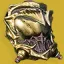
职业技能基础治疗：
使用职业技能时获得 2 层治愈。
燃烧之魂累积与叠层：
连续用烈日击杀（相邻击杀间隔须不超过 3 秒）可累积计数。
每次击杀增加计数： = 34% ｜ 及以上与 = 50%。
累计达到 100% 后获得 1 层燃烧之魂，持续 10 秒，最多 3 层（全部层数同时到期，重新触发刷新时长）。
技能增伤与扩散治疗：
烈日手雷、近战、职业与超能技能伤害提高 15%（处于棱镜时烈日技能同样生效）。
职业技能的治疗效果按燃烧之魂层数强化，并扩散至 15? 米内的盟友（若已有恢复生效则按对应时长延长）：
以辅助队友为主的金装，叠满层需要大量烈日击杀，对技能的增伤也很有限，职业金版本甚至不要求烈日击杀，依赖职业技能回转；看起来很美好但是由于发挥出实力的条件过于苛刻实战没有那么理想
全手雷投掷强化：
被动为全部手雷提供模组「快速球」的效果（感应手雷以外的手雷同样生效）。
强化感应手雷：
爆炸伤害 +14%，爆炸长与宽提高到 14 米。
爆炸不再造成自伤且无距离衰减；手雷持续时间变为 30 秒，本体具备 70 点生命值。
技能命中能量返还：
手雷与近战技能命中提供 30%[7%] 感应手雷手雷技能能量。
技能施加的灼烧首次造成伤害时同样触发上述手雷能量返还（内置 0.3 秒冷却）。
速射神枪的命中各提供 10%[?%] 感应手雷手雷技能能量。
割草还不错，面对单个怪需要依靠圣贤 2 补充部分回转才能实现无缝丢技能，搭配药剂包挽歌勉强可以下高难
强化星相「勇士之鞭」：
勇士之鞭施加的悬停持续时间延长 3 秒。
施加悬停时：
获得织造铠甲，持续 10 秒。
高难中止之跃类似于泰坦版本的曲腹蛛，在勇士之鞭增加了回转之后多用在泰坦的一些枪械玩法上。典型例子比如光剑
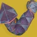
近战命中获得护甲充能：
近战命中时获得 1 层护甲充能。
持有护甲充能时，对来自战斗人员的近战伤害获得抗性。
受到近战伤害时触发电弧爆发：
受到近战命中时消耗全部护甲充能，在 ? 米半径内造成电弧伤害并施加震颤。
PVP
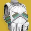
自动步枪与机枪常驻被动：
获得 +30 空中效率；手持自动步枪或机枪时，每 1.5 秒向弹匣补充相当于弹匣容量 10% 的弹药。
自动填装链的叠层与衰减：
用自动步枪或机枪击杀（或破坏实体与构造体）获得 1 层自动填装链，最多 10 层。
持续时间随层数递减，到期只减少 1 层，不清空全部层数。
清怪钻机胸的自动填装和增伤都是其次，最重要的是依据层数为自动步枪/机枪提供 0-50 的弹药生成，对单人合唱/机枪的弹药经济有显著提升
充能电弧近战击杀：
提供 100%近战技能能量并立即开始回复生命值。
清怪雷霆一击的 80% 减伤、优秀伤害、以及配合重击的回血能力让他成为泰坦最优秀的机制金装之一
滑铲反射护盾：
冲刺至少 1.5 秒后滑铲，且职业技能能量已满时，在正面张开 180° 护盾，反射伤害与射弹，持续 0.45 秒。
反射的射弹伤害提高 50%。
能量消耗：
每反射 1 点伤害消耗 2%职业技能能量。
不应该使用
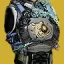
投掷屏障手雷：
使用职业技能后，手雷技能暂时替换为屏障手雷；职业技能能量回满时失去该效果。
屏障手雷命中后生成屏障并使落点 5 米内敌方目标迷失方向（生成后 2 秒内无碰撞伤害；继承星相效果）。
强化三座屏障：
拾取 3 [?] 枚能量球后，屏障手雷会呈 ◯ 形生成 3 座彼此相隔 120° 的屏障。
高难vog4 的最大收益者，被动提供的 1.45 倍职业技能回复效果是电泰坦的优质选择，虽然三个小盾并不会叠加电光充能层数，但是小盾的仇恨吸引、阻挡四面八方的射弹、致盲贴脸的战斗人员给的生存能力超乎你的想象
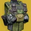
常驻被动：
额外提供一次手雷技能充能，并被动获得一份护甲模组「火力无限」的效果。
能量回复与自动填装：
武器击杀提供 10%手雷技能能量。
使用手雷技能时，补满弹匣（或清空 100% 热量）。
输出自带一个没有冷却 cd 的爆破专家，让他在输出领域有自己的一席之地（如：集体爆破筒子），击杀也有 10 手雷能量回转。如果其他职业的两兄弟也能拥有类似改动就好了
强化融合手雷：
固有附带护甲模组「快速球」效果；手雷接触目标即引爆，并可眩晕势不可挡勇士。
2 火力无限+支配+恢复能量球+炽热余烬+贪婪 4+醒神丝线，每五秒扔一次雷就能实现击杀一个也是无限融合雷，可以搭配死亡信使使用。
常驻被动：
爆炸自伤降低 75%。
满充能后的爆发反冲：
充能达到 100% 后，造成近战「战栗打击」或近战「风暴怒吼」伤害，或受到爆炸自伤时触发：
向后弹开 25 米并获得 5 层冰霜护甲；同时释放扩散波形在 15 米内施加冻结[? 层减速，持续 ? 秒]。
射出 8 枚追踪弹片，每枚在 8 米内造成 623 [?] 点伤害（弹片击杀不累积充能）。
Perk「爆炸箭头」、「高爆载荷」与「延时载荷」虽不造成自伤，仍可触发爆发。
阿莱索尼姆的定制金装，适合搭配药剂包使用，风寒可以配合稳定 5 层冰霜护甲，大型爆炸冻结效果很炫酷
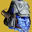
高频冰武器伤害可以快速产冰矛，并且随着冰霜护甲层数提高冰矛伤害，跟风寒冰区域拒止很相配；存在 bug，在释放铸造者右键瞬间捡起冰矛可以让铸造者获得冰矛的增伤造成大量伤害（该伤害不被视作武器伤害，所以也不吃武器增伤）。绑定冰大招以及和钻石长矛星象共享冷却都是减分项。
巍峨屏障替换为突击屏障：
突击屏障允许自己与盟友从中穿透射击。
对突击屏障伤害提高 60%（有效生命值 312.5）。
PVP
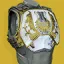
职业技能治疗脉冲：
使用职业技能时，立即治疗 12 米内视线可及的自己与盟友。
屏障回复 160 点生命值与 110 点护盾；推进器回复 60 点生命值。
治疗盟友额外返还 ?% 屏障能量（冷却 1? 秒）。
释放小盾时的爆发治疗不错，给予的职业技能回转能解决小盾衔接问题；释放后 2 秒冷却 3 秒计数的 30 点回血根本微不足道；没有太多使用用途，本质还是小盾减伤吸引仇恨足够强力
超能「雷霆冲击」强化：
雷霆冲击伤害提高 55%。
超能结束时获得 50% [10%] 伤害抗性（抗性 4 层），持续 5 秒。
输出泰坦唯一最好用的脱手大增强金装，含金量自不用多说，抵抗 4 和大招回转都是锦上添花
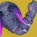
虚空击杀武器激涌：
连续用虚空击杀 2–3 名战斗人员（间隔 ≤10 秒）获得 1 层虚空武器激涌，持续 11 [6] 秒，最多 4 层（满层继续击杀刷新时长）。
充能虚空近战击杀：
用充能虚空近战击杀回复 20% [10%] 超能能量（每次施放限 1 次），并直接获得 4 层虚空武器激涌，持续 11 [6] 秒。
哨兵圣盾超能期间：
圣盾投掷命中回复 10%超能能量并延长超能；轻攻击击杀回满圣盾投掷能量。
输出/大招回转哨兵圣盾输出指定金装，在周围有小怪的情况下可以依靠飞盾延长举盾时间；过机制时使用虚空充能近战击杀回转 20% 超能能量相当可观，可以与蒙特卡洛、拳击手/集体拳击的虚空武器搭配解决近战回转问题
机动性收益：
冲刺速度由 8 提高至 8.5 米/秒；滑铲距离由 6.5 提高至 8.5 米。
冲刺 1.5 秒后获得线性促动器，持续 7 秒。
线性促动器近战连锁：
近战直击消耗效果并对目标施加电击（持续 2 秒）；被电击目标向 12 米内目标释放静电充能，造成 220 [50] 伤害并传播电击。
每次最多传导 6 次，每次施加电击获得 2 层电光充能。
被电击后 2 秒内免疫后续连锁伤害。
PVP
电弧击杀武器激涌：
连续用电弧击杀 2–3 名战斗人员（间隔 ≤10 秒）获得 1 层电弧武器激涌，持续 11 [6] 秒，最多 4 层。
超能「浩劫之拳」护盾与回能：
施放浩劫之拳获得 75 点覆盖护盾并免除精准伤害；护盾脱战 5 秒后回充（7 秒回满）。
浩劫之拳击杀回复 ?%超能能量。
超能结束后：
获得 4 层电弧武器激涌，持续 30 [6] 秒。
PVP，PVE 也不是不能玩
日焰熔炉触发与叠层：
装备烈日超能且超能已满时，技能击杀（红血 1 层，橙血 2 层；未充能近战亦可）获得 2 层治愈并累积日焰熔炉，持续 20 秒，最多 10 层。
手雷与盾爆屏障击杀触发点燃。
输出小锤 6000DPS、大锤 8000DPS，要注意需要一直点击左键并且按住方向键才能吸住
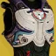
装填微型导弹机制：
造成 1 次精准击杀、4 次武器击杀，或精准命中累积满进度，装入 1 枚移民号微型导弹（最多 6 层，计数不清零）。
发射微型导弹：
放置屏障或使用推进器时消耗全部层数发射微型导弹，每枚造成最高 540 [28] 点动能伤害并获得 1 层增伤（持续 10 秒）。
输出会使用的两种情况①搭配不稳定神枪手回转小盾争取导弹的伤害而并非武器增伤；②真相短轴爆发。是这是因为增伤时间太短只有 10 秒，小盾的回转至少要 20 秒；而且需要精准伤害叠层，这与爆炸武器的玩法不符（火箭脉冲除外）。
强化技能的触发：
使用手雷或职业技能，或造成充能近战伤害时，另外两项技能各获得 1 层强化，持续 5 秒，最多 2 层。
（施放超能会清空全部强化层数。）
各技能独立计时：
界面层数显示与实际生效的回复并不一致；已有的强化不会刷新，新触发技能独立计时 5 秒。
在 buff 改到 5 秒后一蹶不振，玩冰泰坦扔雷还挺有意思
光之武器保留与圣人层数：
离开黎明护罩后光之武器仍保留 15 秒；光之武器生效时平均每造成 600 点伤害或击杀均可累积圣人层数（上限 14 层）。
动能与虚空压制：
用动能或虚空伤害达到累积条件时，在目标周围 7 米半径内施加压制，持续 6 [?] 秒。
拾取核心延长护罩：
拾取核心消耗全部圣人层数延长护罩（每次施放限延 2 次）：
首次延长（圣人层数 + 1）秒（14 层最多 +20 秒）；第二次每层延长 1 秒（10 层最多 +10 秒）。
输出适合泰坦单人搭配霸道回声，为揭纱露眼一直触发填装无需换弹
割草裂波者废墟石板无限泡泡盾的割草玩法很有意思
装备冰影超能技能时：
集结屏障与巍峨屏障替换为冰川壁垒（由 4 块中型与 1 块小型水晶组成，冷却按巍峨屏障计算）。
冰川壁垒继承集结屏障属性加成，水晶全被摧毁后加成依然生效。
使用推进器时：
在身前呈 V 形生成 2 块冰影水晶（不继承集结屏障加成，不改写冷却）。
风暴怒吼改版前对冰泰坦是不错的金装，但是现在他的最大作用是贡献了职业金版本
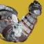
常驻被动（装备冰影超能）：
每获得 1 层冰霜护甲回复 10 点生命值。
连续用冰影击杀 2 名敌方目标（间隔 ≤3 秒）获得 1 层冰霜护甲。
屏障替换为冰川守卫：
屏障类技能替换为冰川守卫（冷却变为 70 秒）。
施放时自己获得满层冰霜护甲，并对 ? 米内的敌方目标施加 100 [40] 层减速。
神器治愈能量球让他成为合成手的下位，如果玩醒神丝线丢雷冰泰坦可以解决回血问题
烈日击杀回能：
烈日击杀回复 15%职业技能能量（两次返能间隔 1? 秒）。
屏障释放烈日波形：
装备烈日超能放置屏障时，向前释放 3 道追踪的烈日波形（最远 18.5 米，伤害不重叠）。
每道造成 480 [100] 伤害并施加 60+30 [30+15] 层灼烧；命中[击杀]目标在其脚下生成太阳黑子。
波形触发的烈日效果无 PvE 3 倍加成，点燃伤害降低 66.7%；未装备碎片「骨灰余烬」时约需 5.3 秒触发点燃，装备后约需 1 秒。
火泰坦光剑能玩，可惜点燃是最低倍率，他的职业金版本或许更加优秀
常驻被动：
跃升期间可腰射与机瞄，并获得 +50 空中效率。
主要武器腰射收益：
+5 射程、+30 稳定性，精度锥范围 −30%、精准判定角度 +2?°，瞄准辅助与伤害衰减距离 +20%。
「死者传说」、异域武器「遗言」与异域武器「汤米的火柴盒」不享受伤害衰减距离加成，精度数值另有调整。
跑图泰坦优秀的跑图金装，搭配刀剑可以无限跳跃
生成的太阳黑子无需装备星相亦可赋予「无敌索尔」；未装备星相时无法延长其持续时间。
盾爆星象能够触发两次太阳黑子，但是可惜没法吃到太阳黑子的技能冷却提升。如果给予的还是曾经的恢复 2 那将是非常优秀的金装
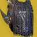
受到敌方目标伤害时：
提供 5% 手雷、近战与职业技能能量（触发冷却 1 秒）。
装备虚空超能技能时：
连续击杀 3 名敌方目标（间隔 ≤5 秒）或在重伤时击杀：获得吞食，持续 5+2.5 秒。
PVP，棱镜能拿吞噬但是没那么有用
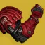
锻造大师的触发：
拾取一枚焰灵，或连续用烈日击杀 3 名战斗人员（间隔 ≤3 秒）获得锻造大师。
持续 12 秒（使用投掷飞锤时开始计时），首次激活提供固定 11.7%近战技能能量（持续 8 秒）。
召回与完美回收：
生效期间投掷飞锤追踪能力增强；按近战键可召回飞锤并全额返还近战能量。
命中后等待 2? 秒召回完成完美回收，在 5 米内触发爆炸造成最高 290 [?] 伤害。
每次完美回收或拾取焰灵使时长延长 3 秒（最长 12 秒）。
他很好玩，棒鸡曾经为了他给小锤增加了 0-36% 乘算的随距离变化增伤
无畏护甲的护盾生效期间：
每 1.5 秒提供 1 层电光充能。
速度加成生效期间：
在身后留下一片区域，为盟友提供速度加成。
不觉得带着队友一起冲锋很有救赎感吗
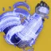
常驻被动：
霰弹枪获得 +? 填装速度与 +30 空中效率。
用霰弹枪或近战连续击杀达到 100% 进度开始回复生命值（红血 34%，橙血及守护者 50%）。
元素增益期间伤害加成：
增幅、恢复、虚空覆盖护盾、冰霜护甲或织造铠甲生效时，霰弹枪伤害提高 35% [10%]，近战伤害提高 30% [?%]。
击杀延长上述效果 5 秒；虚空覆盖护盾生效时额外增加 +15 点护盾。
超能近战增伤：
超能近战伤害提高 30%（与护甲模组「护盾粉碎」加算）：浩劫之拳轻击、烈焰战锤弹片、哨兵圣盾轻击、冰川震击轻击与风暴怒吼。
输出泰坦的单人输出最佳金装，有电泰坦的聚合+换挡/战壕裁决定论；也有虚空泰坦的全明星动能合成完美悖论/威胁等级
高难高难通常与杀手之牙搭配使用，骑士之火打雷电泰坦或者棱镜泰坦都是可行的选择
受到伤害时：
高亮首个造成伤害的敌方目标 8 秒（同时限 1 名）。
击杀被标记目标：
获得「复仇」——95 点覆盖护盾，持续 6 秒（生效期间无法再次标记）。
PVP，PVE 也不是不能玩
受击状态抗性与反击：
受到减速层数与持续时间减半；冻结与悬停持续时间减半；脱困不造成自伤。
从冻结或悬停中脱困触发烈日爆炸，在 9 米半径内造成最高 105 点烈日伤害。
跟术士的黎明副歌一对比就显得什么都不剩了
微型冲锋枪常驻被动：
获得 +40 空中效率；微型冲锋枪收起 1.25 秒后自动补满弹匣。
持枪移动与操控：
手持微型冲锋枪时敏捷 +25、操控性 +50、举枪/收枪时长倍率 0.8?×，机瞄移速惩罚降低 33%。
冲刺速度由 8 提高至 8.5 米/秒；滑铲距离由 6.5 提高至 8.5 米。
命中叠层增伤：
命中战斗人员获得 1 层增伤（持续 1 秒，最多 20 层，每次刷新时长）。
每层使微型冲锋枪直击伤害提高 5%（首领具有 33% 伤害抗性）。
高难药剂包的驱逐引擎混乱无序超前玩法
清怪搭配高弹药生成且有优秀伤害的越橘、泰拉巴玩法
常驻被动：
提供 +20 空中效率。
空中触发游隼打击：
冲刺 2 秒且离地 0.5 秒后获得游隼打击，直到落地为止。
游隼打击伤害与回能：
冲锋类近战技能（地震打击、战锤打击、圣盾强袭）直击伤害提高 250%。
对勇士、折磨者与提高至 550%，且命中返还 100%近战技能能量。
攻击被冻结的目标时不获得该伤害加成。
清怪虽然游隼腿在近战加算后在宗师没有太多发挥空间，但是在 raid/地牢内容中能够快速清理的优势让他成为泰坦最优秀的机制金装之一
太阳黑子支援盟友：
太阳黑子可作用于盟友，持续造成烈日武器伤害可延长其时长（外圈带一道白环）。
未装备星相时最多只能延长 2 秒。
装备星相「无敌索尔」时：
太阳黑子赋予的「无敌索尔」持续时间翻倍（5 → 10 秒）。
为盟友赋予 3–5 次烈日增益时：
在自己脚下生成一个太阳黑子（同时赋予多名盟友分别计数）。
非常团队的金装，理论强度取决于队友抱团程度，但他实际并没有太多使用
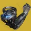
充能与释放时的落雷：
雷霆一击开始蓄力与释放时，落雷击中 15 米内目标，造成 181 [50] 点伤害并施加且引爆震颤。
处于增幅时落雷伤害翻倍至 360 [100?]。
满充能伤害爆发：
蓄满后落雷伤害最高再提高 200%（与增幅叠乘达 1080 [?]）。
满充能单次造成 2365 伤害；处于增幅时最高达 3085。
强度取决于帧数，只推荐 300 以上的玩家使用（使用雷霆一击时：按帧率额外返还近战技能能量。帧率对应：30 帧 = 10%｜60 帧 = 18%｜120 帧 = 32%｜144 帧 = 41%｜300 帧 ≈ 77%）
喷气背包燃料机制：
每秒被动回复 3.5% 燃料；武器击杀回复 20%；电弧充能近战击杀回复 50%。
充满后在空中按［空中移动］启动喷气背包（使用后燃料清空）。
启动冲击与飞行：
启动时在 6 米内造成最高 168 [69] 点伤害并施加疲惫（目标造成伤害降低 25%）。
轻按飞行 1.5 秒（30 米）；长按飞行 3 秒（50 米）。
英勇肩撞：
飞行中撞击目标造成 1509 [?] 点电弧伤害，在 ? 米内施加致盲，近战属性 +40（持续 7 秒）。
跑图英勇礼服无法继承先前的速度挺可惜，不过可以补足剩下不够的距离，电弧导体故我在的玩法非常有趣。英勇礼服的撞击是近战，能吃到堡垒重击等增伤
复活时的护盾场域：
复活盟友或被复活时展开 15 米场域（持续 10 秒），自己与盟友获得护盾加持。
离开场域范围暂时失去护盾加持。
护盾加持与失效：
提供 100 点覆盖护盾（脱战 2 秒后 1 秒回满）。
护盾被打破后加持移除不可再次获得；若自己的护盾被打破，所有盟友的护盾加持一并移除。
同元素武器击杀恢复：
用与超能同元素的武器击杀时，自己与 15 米内盟友获得 1 层恢复，持续 3+1.5 秒（冷却 3 秒）。
清怪对应大招属性武器击杀可以为自己与盟友提供短暂的恢复 1，朴实优秀的效果，可用作机制金装；棱镜可用职业金版本
一次性燃烧锻锤：
超能替换为一次性砸击，伤害提高 650% 并释放 3 道追踪波形（不再享受持续超能的能量生成加成）。
波形施加 20+40 层灼烧，命中生成追踪旋风（持续 7.5 秒，每 0.2 秒造成 19 [16] 伤害，每 0.56 秒施加 ?+? 层灼烧）。
星相「神圣献祭」旋风：
星相「神圣献祭」第二段砸击的中间波形亦生成旋风（每 0.2 秒造成 7 [3] 伤害，每 0.56 秒施加 3+2 层灼烧）。
泰坦少见的脱手大金装，但是脱手大锤的伤害跟不上如今的数值膨胀了，连火泰坦都基本不会使用它
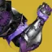
圣盾投掷强化：
额外提供一次近战充能；投掷可穿盾，命中施加虚弱，持续 10 秒（超能期间圣盾投掷同样施加虚弱）。
眩晕与击杀收益：
圣盾投掷眩晕屏障勇士时返还一次充能；击杀生成一枚虚空裂口（无冷却）。
拾取虚空裂口回复 11.25% 近战技能能量。
泰坦单人的输出金装，存在 bug 在超凡状态下的近战无法施加易伤，需要依靠切换职业技能退出超凡形态，普通玩家一般不会用到
圣盾投掷产出的虚空裂口不存在 CD，可以配合冰冷伺候使用，反屏障效果与虚荣自负一样会受压光影响，-50 光需要两盾才能破
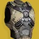
近战击杀与终结技动能爆炸：
用充能近战击杀或使用终结技时，在目标处触发动能爆炸，击飞目标并使其迷失方向（两次非连锁爆炸间隔 1 秒）。
连锁爆炸：
充能近战击杀触发的爆炸可以连锁（在 8 米半径内造成最高 242 [?] 伤害，无冷却但不可同时多发）。
断绝末路高难乏力，低难又有些小题大作，中等难度的压光环境是他的舒适区
刀剑常驻被动与格挡：
获得 +100 防御抗性与 +100 防御持久。
格挡提供 ?% [68%] 伤害抗性；使用威能刀剑时承受伤害与格挡均不消耗能量；格挡期间另获 50% [10%] 抗性。
完美格挡叠层与恢复：
每次格挡命中获得 2 层完美格挡，最多 100 层（脱离格挡 10 秒后清空；已有恢复效果时不可累积）。
持层数造成刀剑伤害获得 2 层恢复（1 层持续 4 [3] 秒，满层最长 16+8 [6+3] 秒）。
高难吃到光剑红利的金装，泰坦的任何分支搭配圣贤 2 据点都能在高难本有一战之力，建议使用棱镜/缚丝/虚空分支
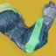
15 米内有至少 3 名敌方目标时：
获得生物强化（脱离条件后保留 5 秒）。
生物强化效果：
超能伤害提高 50%；近战伤害提高 165% [100%]；提供 +35? 操控性与 +35 填装速度。
高难冰泰坦专用金装，搭配贪婪 4 成为三职业高难速通天花板的存在
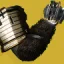
格挡期间移动加速：
用星相「坚不可摧」或超能「哨兵圣盾」格挡期间，移动速度提高 15%。
格挡转化超能与手雷能量：
超能结束后把格挡掉的伤害转化为超能能量，最多返还 50%。
星相「坚不可摧」结束时按格挡量返还手雷能量（从 15% 起算，最高返还 60%）。
坚不可摧自身的回转已经足够，哨兵圣盾举盾也有毁灭之牙这种更优秀的选择
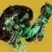
狂暴利刃充能与增伤：
额外提供一次近战「狂暴利刃」技能充能。
狂暴利刃或星相「镖弹风暴」命中时获得 1 层神龙利爪（持续 2.75 秒，最多 3 层）。
伤害按层数提高 25% ｜ 60% ｜ 120%。
战争旗帜脉冲回能：
星相「战争旗帜」脉冲按 10 米内每名盟友提供 5% 近战能量（自己亦计入）。
在有搏击手词条时他也很好玩，常态回转和伤害都成问题
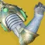
燃烧之拳的触发与衰减：
用近战、偃月近战或终结技击杀，获得 1 层燃烧之拳，最多 5 层。
新层数获得后等待 2 秒再开始倒计时；到期只减少 1 层，不清空全部层数。
清怪维王者（任意偃月）+NPA+梦根 2（压制偃月产球）搭配电/棱镜/虚空分支是非常优秀的机制金装；火小锤+（地窖 2+灭火 2/se2）/（涅索斯 4）+神器风寒冰粪坑的组合即使在宗师也有一战之力
输出虫手小锤是目前唯一拥有优秀 DPS 的近战技能输出，对熟悉游戏的玩家而言是非常顶级的单人输出手段
高难虫手好耶/虫手偃月好耶/火小锤+神器风寒冰粪坑在有叠层环境的宗师中拥有不错的表现
施放超能时：
为自己与 ? 米内的盟友回满生命值、手雷、近战与职业技能能量。
超能结束时：
8 秒内每秒固定提供 66% 手雷与近战技能能量。
输出尽管有黏附冲击神器对黏雷的加持，但是常规 DPS 比一些顶级的输出武器选择略逊一筹，目前唯一的使用场景是电术 solo 大师看护人
瞬移的被动强化：
获得 +30 空中效率。
瞬移距离增加 25%；两次充能冷却由 3.55 秒降至 2.85 秒（−20%）；两次瞬移间隔由 1.65 秒降至 1.15 秒（−30%）。
免费暗影瞬移：
在虚空或棱镜分支上装备瞬移时，每 6 [8] 秒可用［空中移动］免费发动一次水平暗影瞬移。
暗影瞬移释放 4 [2] 枚追踪弹（机制同新星折跃，伤害随超能伤害加成递增）。
超能「新星折跃」期间，暗影瞬移不消耗超能能量。
使用瞬移或暗影瞬移后：
对 10 米内的敌方目标施加不稳定，并获得不稳定弹药，持续 9 [5] 秒。
获得 +100 操控性，持续 2 秒（收枪取消）；雷达保持可见。
提供的虚空虚弱伊卡洛斯和瞬移不稳定非常完美地契合了石板的邪恶收割和不稳定神枪手，建议搭配速度指挥/土味涡流故我在/杀手之牙/裂波者等强力虚空武器，频繁使用俯冲召唤线虫施加切割获取织造铠甲，搭配面面俱到等也可以快速回转大招，是非常有趣的技能流金装，唯一的缺点是要适应瞬移的手感
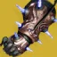
超能「严冬之怒」强化：
被超能「严冬之怒」冻结的目标，受到的碎裂伤害提高 150%。
施放碎裂攻击时，30? 米内的盟友获得 4 层冰影武器激涌（持续 15 [6] 秒）与满层冰霜护甲。
每名受益的盟友返还 ?%超能能量。
该增益可刷新，返还似乎每名盟友只算一次。
超能结束后，自己获得满层冰霜护甲。
冰霜脉冲裂痕：
装备星相「冰霜脉冲」施放裂痕时，自己与 ? 米内的盟友获得 2 层冰影武器激涌（持续 11 [6] 秒）与满层冰霜护甲。
每名通过冰霜脉冲获得冰霜护甲的盟友，为自己回复 2%超能能量。
高难巴利道斯对大招的实际增伤只有 20%，冰霜脉冲自身也带 5 层冰霜护甲，对个人的作用极其有限，不应该在单人活动中使用。最大的价值是在多人场景下给予队友冰霜护甲的辅助（注：冰大右键碎冰有大头的右键伤害和小头的右键碎冰伤害，150% 碎裂伤害是指提升小头的碎冰伤害）
常驻被动：
异域武器「流明」获得 +30 空中效率；高贵追踪弹还会为其补充高尚弹药。
职业技能回能（追踪弹命中盟友时按在场盟友数返还）：
2 名 ?% ｜ 3 名 25?% ｜ 4 名 ?% ｜ 5 名 ?%。
输出辅助术士最重要的团本辅助金装，提供 35% 的焕光系增伤，几乎所有的队伍中都需要一个汇编器的角色
清怪给予的奶阵回转和大范围队友支援相当优秀
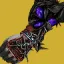
虚空灵魂的持续与回收：
虚空灵魂持续时间延长 55%，存续 10 秒后伤害最高提高 30%。
可通过交互收回灵魂；收回后获得「虚空灵魂待用」，持续 25 秒，期间可重新放置。
旧神之子增加压制的最大受益者，除了以外的怪只要被旧神之子拴住基本上失去了作战能力，非常优质的控场，个人比较推荐使用强能阵版本的吸血，强能阵本身也会给可观的三技能回转和额外弹药效率，与邪恶收割相性很好
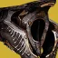
追踪步枪自动补充弹药：
每 0.7 秒补充相当于弹匣容量 4% 的弹药，收枪时同样生效。
标记敌方目标：
用追踪步枪对、勇士、或载具命中 5 次（相邻命中间隔 ≤? 秒）时，标记该战斗人员 10 秒。
后续命中刷新标记时长。
盟友击杀掉落弹药：
盟友击杀被标记的战斗人员时，为盟友生成威能弹药，为自己生成特殊弹药。
生成的弹药块提供总备弹的 10%，拾取量受回收器模组影响。
输出辅助在批发弹药的今天，墓碑头的的主要作用不再是为队友产子弹，而是保证神性圈不断，但随着神性使用率降低出场机会也变少了
动能击杀触发元素爆炸：
用动能武器击杀时，在目标处触发与所选超能同元素的爆炸并施加对应减益。
同时获得 1 层晶体三极管，持续 11 秒，最多 2 层（到期只减少 1 层）。
爆炸伤害与范围：
爆炸最高造成 252 [100] 点元素伤害。
基础半径 4 米 ｜ 1 层 6 米 ｜ 2 层或动能精准击杀 8 米。
虽然增强后不需要精准击杀触发，爆炸范围还是不够理想，缚丝切割可以联动神器崩解，虚空虚弱可以联动神器邪恶收割
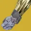
常驻被动：
额外提供一次近战技能充能。
被动获得一份护甲模组「回天掌法」的效果。
多一层近战和产球，仅此而已
超量充能手雷强化：
用星相「混沌加速」为手雷超量充能时获得 20% 伤害抗性；超量充能手雷施加虚弱，持续 6?[2.5?] 秒。
反转之握的强度一般，必须依靠武器承担大半伤害，散射雷出伤快、伤害适中、回能量适中；涡流雷出伤很慢、伤害较低、但是因为在有一定血量的战斗人员环境可以触发两次回雷，技能经济是比较优秀的，而且不能小觑涡流雷聚怪给与的控场生存能力，也适合配合区域拒止混乱无序等爆炸武器出伤；手持超新星有最高伤害，但是回复的技能能量很少，而且要承担贴脸的风险；量子雷对单伤害最低，但是清怪还不错。
传导叉齿的触发与叠层：
至少装备 1 项电弧技能时，用电弧技能击杀或造成震颤击杀，获得 1 层传导叉齿，持续 10 [4] 秒，最多 3 层。
全部层数同时到期，两次叠层间隔极短。
放置星相「离子哨兵」时：
在其位置额外触发一枚风暴手雷。
割草优秀的电术割草配装。给予的电弧技能回转、离子哨兵附赠的风暴雷、增加雷霆万钧的使用时间都很舒服
超能「黎明」强化：
黎明的射弹命中即触发点燃。
元素效果与能量回复：
灼烧每次持续伤害提供 5?%近战技能能量。
点燃伤害提高 100%；每命中一名敌方目标提供 40%近战技能能量。
猎人日志「烈日爆发」将提供的近战能量翻倍，其自身伤害亦翻倍。
输出黎明副歌可以翻倍所有点燃的伤害（光剑除外），这使得点燃占伤害一部分的武器得到了显著的伤害提升，最典型的比如千语、狼毒、纯五度故我在，多人情况下仍然需要确保队伍中已经有汇编腿的情况下使用。分离老二的最优解，无限点燃可以轻松拿下锁具
高难翻倍点燃伤害、依据点燃、灼烧提供可观的近战技能回转，神器烈日爆发实际上隐性的第二次点燃会提供翻倍的技能能量从而实现接近无限响指，常见的玩法有火术蝎狮、棱镜纯五度故我在。对大招黎明的增强只是附赠品
装备超能「缚丝」时：
施放裂痕对 6 米内的战斗人员施加悬停。
自己施加的悬停获得恶意抓握效果；击杀处于悬停的敌方目标回复 15 点生命值。
恶意抓握持续伤害：
处于强化悬停的目标每 0.467 [0.3] 秒受到一次递增的动能伤害；每次生效时自己回复 5 点生命值。
伤害从 23 [9] 起算，每次递增约 5.5% [?%]。悬停结束时另造成 64 [34?] 伤害。
对整段合计约 380 点动能伤害（装备碎片「持续丝线」时约为 550）。
裂痕触发的额外加成：
由施放裂痕触发的恶意抓握伤害提高 112.5%（本条所列数值尚未计入该加成）。
要求裂痕回转，如果悬吊的战斗人员不够多回血量也不够可观，并没有解决缚丝术缺少软减的问题，棱镜有更多优秀的金装选择。悬吊 dot 伤害有夸张的超能回转效率，然而缚丝脱手大也比较幽默，如果他能和虚荣自负合二为一将是设计优秀的金装
近战「地狱火」射弹飞行 17 米后，伤害提高 20%。
近战「地狱火」在空中飞行 1 秒后释放 4 枚追踪弹片。
弹片造成 18 [?] 点烈日伤害，并施加 5+0 层灼烧。
仁心用于远程刮痧点燃还不错，但是现在黎明副歌是他的全方面上位
常驻被动：
基础手雷、近战与职业技能回复速率额外 +45%，并提供 +15 空中效率。
目标轮廓高亮：
为生命值低于 50% 的敌方目标显示红色轮廓；为超能已满的敌方显示黄色轮廓。
隐身的敌方目标满足上述条件时同样会被高亮描边。
PVP
拾取离子轨迹时：
为 15 米内的盟友提供 10% 的手雷、近战与职业技能能量。
割草搭配光耀 4 回转技能非常解压，贪婪 4 由于是加算在技能回转和辅助队友层面略逊一筹
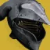
充能近战虚弱：
充能近战造成伤害时施加虚弱，持续 6 秒。
对抓钩近战与超能「烈焰之歌」不生效。
击杀与终结技爆发：
充能近战击杀或使用终结技时，在目标处触发强力虚弱爆发。
目标迷失方向且受到的伤害提高 30% [屏幕黑屏 7.5 秒，随减益走向 15 秒逐渐恢复，界面不消失]。
长时间易伤邪冬头板凳终结技能够实现远距离上长时间易伤，搭配一些续易伤手段经常出现在 lowman 环境。
输出邪冬头的输出案例是非常优秀的伤害选择，利用邪冬头的近战上易伤机制续上推推的 30 易伤，火歌星界之火的原理用堡垒的 300% 增伤雪上代替，让推推位在给予队友焕光和生存能力的同时打出与队友相同甚至更高的输出，输出过程仍然有很多细节需要注意，适合多人环境下不方便叠层的情况使用
持有至少 5 层电光充能时冲刺 1.5 秒：
继续冲刺期间每 0.33 秒获得 1 层电光充能。
超能能量返还：
拾取离子轨迹提供 +4% 超能「混沌之触」超能能量。
超能「混沌之触」命中提供 10%超能能量（两次触发间隔 0.75 秒）。
超能「混沌之触」的总伤害因此最高提高 120%。
优秀的电术输出大招，可以依靠击杀快速回转大招，在分离老二能够一穿四锁具，但黎明副歌无限点燃的打法更轻松简单
长按［手雷］召唤电弧之魂：
装备电弧手雷技能时，长按［手雷］召唤电弧之魂（持续 20 秒）并获得增幅。
电弧之魂存在时，裂痕将其时长刷新至 20 秒（常规为 15 秒）。
电弧之魂命中回能：
电弧之魂命中回复 5%手雷技能能量（每轮点射最多触发一次）。
处于吞食期间，命中不再返还手雷能量。
输出逃逸手是术士最万金油的顶级金装，电炮台搭配上火炮台和线虫不依靠武器就能提供不俗的伤害，是在进行单人内容或者队伍中已经有火中术士后的不二之选
清怪逃逸手的星象选择多样，通常以火炮台线虫的的拉满伤害和冰炮台吞噬的控场生存为代表，前者需要支配的吃球回雷或者预言 4 补足手雷回转。各个炮台的协助清怪能力非常强，常驻增幅也是加分项，几乎不用考虑生存问题
高难正如前文所言，逃逸手是非常优秀的枪架子，技能占了伤害的一半，几乎适配任何武器选择，作为术士高难最顶级的选择之一
机制生存吸血手在近战/终结技击杀后给予长达 8 秒的恢复 1/恢复 2 提供的生存能力非常夸张，对除棱镜以外的分支来说是非常优秀的走机制金装，常与偃月配合使用
裂痕与光焰之井增益：
自己与盟友站在自己施放的裂痕或超能「光焰之井」上时：
+100 填装速度，填装时长倍率 0.9×；强能裂痕与光焰之井提供 100% [50%] 伤害衰减距离加成。
换下这件异域防具后效果仍会保留。
主要武器腰射收益：
+5 射程、+30 稳定性，精度锥范围 −30%、精准判定角度 +2?°，瞄准辅助与伤害衰减距离 +20%。
「死者传说」、异域武器「遗言」与异域武器「汤米的火柴盒」不享受伤害衰减距离加成，精度数值另有调整。
输出月鞋火中是“释放时判定”的效果，所以可以在放完火中后切到汇编腿仍然保留月鞋的效果，但是考虑到收益大部分玩家不会愿意增加自己的操作复杂度，月鞋如今鲜有出场了
标记目标死亡爆发：
被标记的目标死亡时触发悬停爆发，造成 269 [40] 点缚丝近战技能伤害，并对 6 米内的敌方目标施加悬停。
把虚荣自负放在这个位置完全是因为他给织针风暴的增幅，搭配进化丝线和集群战术是伤害最高的一批脱手大，虽然有血红炼金术之争，但是最优解是二者结合：放完大后切到血红炼金术。缚丝术上升丝线搭配双增伤光芒复仇是游戏内的最顶级 DPS 之一，有些操作门槛，会在一些追求极限 DPS 的场合出现
虚荣自负在高难环境下强度一般，由于他的反屏障效果并不是机制反屏障，所以受压光影响严重。在 50 光环境下需要三枚织针才能打破屏障；他的最大作用是击杀标记战斗人员释放悬吊，标记需要近战回转，这意味着必须绑定棱镜超凡。在面对时相当于白板金装
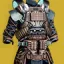
能量虹吸触发机制：
用与超能同元素的武器击杀，或连续造成 5 次同元素武器伤害（相邻伤害间隔 ≤3 秒，每秒最多计 1 次）时触发能量虹吸（触发冷却 ? 秒）。
超能已满时的武器激涌：
能量虹吸改为赋予 4 层与超能同元素的武器激涌，持续 11 [6] 秒。
超能已满时，烈日超能上的能量虹吸有时会触发失败。
超能结束后的和谐弹药：
获得 4 层全元素武器激涌，持续 10 秒；同时获得和谐弹药，持续 15 秒。
造成与超能同元素的武器伤害时在目标处触发同元素爆炸（每秒最多 1 次，6 米内最高 180 [?] 伤害，击杀可触发能量虹吸）。
割草、大招回转和谐护肩搭配元素超充器、苍白之心原始特性，铁旗 4 套装等等可以快速回转大招，给予除动能外全属性激涌还不错，就是时间略短了；谐振军火的伤害是个添头，无法吃到任何增伤。
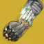
常驻被动：
为忧愁武器提供 +30 空中效率。
强效腐化施加与传播：
近战命中施加强效腐化；被腐化的目标死亡时向 5 米半径内的敌方目标扩散。
持续伤害与递增：
强效腐化每 0.52 [0.7] 秒造成一次伤害，持续 10 [?] 秒（最多造成 19 [?] 次伤害，基础单次 32 [5?] 点动能伤害，整段合计 1366 [?]）。
伤害逐次递增：前 14 次每次递增 11%；后 5 次平均每次递增 41%（重新施加时重置递增）。
经常搭配忧愁系列武器使用，与库尔之影的联动令人影响深刻，枯骨鳞片和荆棘清怪手感也还不错
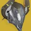
深海萃取的获得与延长：
虚空伤害击杀获得深海萃取（每次增加 2.5 秒，最长 20 秒）。
灵魂虹吸击杀或用虚空伤害击杀处于压制的目标，使深海萃取额外延长 1.5 秒。
灵魂虹吸压制：
灵魂虹吸命中时施加压制，持续 10 [5] 秒。
深海萃取技能回复加成：
基础手雷与近战回复速率额外 +300%；基础职业技能与超能回复速率额外 +200%。
割草优秀的虚空术士割草金装，建议与灵魂虹吸、旧神之子、强能阵搭配
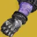
散射手雷强化：
额外提供一次散射手雷技能充能；子弹药追踪能力与飞行速度大幅提升。
击杀生成额外子弹药：
散射手雷击杀时额外生成 3 枚散射子弹药（额外的子弹药无法再引发爆炸）。
非必要的虚弱让虚无镣铐从极其解压的割草金装，沦落为只能清理几只怪的、有回转问题的金装
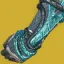
常驻被动：
提供 +35 操控性、+35 填装速度与 +10 空中效率。
PVP
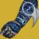
急冻手雷强化：
额外提供一次急冻手雷技能充能；追踪更强，飞行距离与速度提高 17.5%。
锇素手搭配冰焰飞弹展现出了极其强大的控场能力，但是极其缺少伤害输出，依赖武器
超能「光焰之井」回能条件：
所选超能为光焰之井、站在自己的光焰之井内、且超能能量低于 50% 时，击杀返还超能能量。
击杀返还递减：
每次击杀初始返还 10%超能能量；连续击杀时每多一次击杀，单次返还量减少 1.5%，最低为每次 4%。
能与铁旗 4、苍白之心、元素超充器等搭配实现无限火中
超能期间击杀：
超能「光焰之井」与「黎明」击杀为自己与 10 米内盟友同时提供焕光与 2 层治愈。
看起来很酷的机制却华而不实，汇编腿是他的全方面上位还不需要击杀
常驻被动：
融合步枪与线性融合步枪获得 +30 空中效率。
武器击杀赋予焕光：
融合步枪与线性融合步枪击杀提供焕光，持续 7.5+3.75 秒。
空中移动填装：
使用空中移动（星相「伊卡洛斯突进」或星相「编织微步」）立即补满全部武器弹匣。
现在基本不会使用火焰润羽三切猴戏输出了；可以抱着 vex 揭秘者清怪
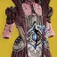
凄凉观察者与冰风暴：
星相「凄凉观察者」索敌距离增至 50 米，并释放覆盖 6 米的冰影风暴。
在炮台对角方向生成 4 块中型冰影水晶（15 秒后重新生成，伤害计为超能伤害）。
冰锥的累积与发射：
站在冰影风暴中时，每秒获得 1 层冰锥，最多 5 层（离开风暴后保留 2 秒）。
开火时释放冰影射弹（每 0.2 秒最多发射 1 次），造成 50 [?] 点伤害并施加 50 [20] 层减速，持续 ?+? 秒。
高难霜袍是对于冰术而言最好的金装，可用集体爆破骑士之火释放大量炮台，也有靠混乱无序出伤的打法，使用预言套则要搭配死亡信使，涅索斯是更为保守稳妥的选择，更推荐冰霜脉冲星象回转裂痕，冰川收获在冰分支改版后并不是必须的选择
裂痕与光焰之井伤害收益：
处在裂痕或超能「光焰之井」中时，获得 4 层与超能同元素的武器激涌。
对敌方目标造成伤害将其标记 5 秒；标记期间自己对其造成的全部伤害提高 10%。
击杀暂停裂痕计时：
在裂痕或光焰之井里击杀获得真血之法（每次增加 5 秒，最长 15 秒），期间裂痕倒计时暂停。
超能「光焰之井」的持续时间不能因此延长；战斗中换上该防具后全部效果失效 10 秒。
输出站在裂痕中血红炼金术不仅会给予对应大招属性的 4 层激涌，还有最主要的对标记目标造成所有伤害的 10% 额外乘区，可以依此实现不同属性武器双/三切输出；让回旋喝彩这种双属性武器吃满激涌；如果属性对应则可以带满武器洗礼而不是激涌，单人 solo/队伍中已经有汇编腿术士时适合使用
装备虚空超能技能时：
踏入自己创造的强能裂痕提供吞食，持续 11+0 秒；重新进入同一裂痕可刷新时长（最多刷新至 11+11 秒）。
吞食生效期间：
击杀提供 10%职业技能能量。
不再提供过载射击（破盾功能已作为固有属性自带）。
绑定虚空大招，而吞噬对于虚空分支通过碎片就可以随意取得，击杀回转职业技能作用有限。棱镜不如选择他的纯上位职业金版本
超能「新星炸弹」施放期间：
伤害抗性从 99.5% 起步，接近结束时降至 75%。
施放后获得 5 秒窗口，可投掷「新星炸弹：长矛」（8 米内造成最高 2269 [?] 伤害，首领最高 2950）。
长矛与新星灾变联动：
长矛打碎新星灾变时（须相距 ≥20 米），额外触发新星涡流；单次超能对最高造成约 14500 伤害。
超能能量返还：
新星炸弹每次击杀返还 5?%超能能量，最多返还 50%。
处于吞食时，武器击杀按目标档位额外回复超能能量（T1 至 T4 与均提供 ?%）。
矛的释放需要合适的时机，判定没有那么严格，吃满伤害与猎人金枪同水平，比六层噬星略高，但是由于需要两次大招释放动画而且容易遮挡队友视野很少有使用场景。搭配铁旗 4 砸怪堆可以快速回转大招
恢复炮台生成：
消耗治愈手雷在身前生成恢复炮台（存续 9 秒，生命值 100?）。
炮台治疗机制：
每 3 秒向自己与 30 米内的盟友发射治疗追踪弹，在 7.5 米半径内赋予 1 层治愈与 1 层恢复（持续 4+2 [3+1.5] 秒）。
装备星相「火焰之触」时，仅自己获得的治愈与恢复提升至 2 层。
治疗生成能量球：
为受伤的盟友回复生命值 1 次 [6 次]后，在其位置生成一枚能量球（提供 2.5%超能能量，冷却 10 秒）。
彪悍高难先知头不再追踪满血友军后变得非常难用，回转也存在问题，但是却完美适配了彪悍环境
常驻被动：
额外提供一次融合手雷技能充能；基础融合手雷回复速率额外 +20%。
武器命中与击杀回能：
处于焕光，或站在光焰之井、强能裂痕内时，武器命中提供 5% 手雷能量（间隔 0.4 秒），击杀提供 15% 手雷能量。
融合手雷击杀：
提供 100%职业技能能量。
跑图用的最多的是超级跳触发两次炽热升腾；正常使用可以搭配预言 4、黏附冲击等等，不依靠击杀回转的手雷能量不太够看
常驻裂痕抗性：
为站在裂痕内的提供 25% [5%] 伤害抗性（抗性 2 层；与光焰之井重叠仍生效）。
进入重伤时：
立即返还 50% [25%] 职业技能能量（持续至脱离重伤为止，实际上起到冷却的作用）。
阵亡时：
在原地生成一个治愈裂痕，持续 15 秒。
搭配纯火属性分支圣贤 2 光剑不错，其他搭配裂痕回转存在问题
施放超能时：
获得增幅，持续 15 秒。
超能「雷霆万钧」强化：
超能命中与击杀累积 1 层晋升振幅，最多 30 层。
离子瞬移消耗降低 50%（降至 3.125%）；每层使超能伤害提高 6.7?%，满 30 层时提高 +200%。
超能击杀按数量返还超能能量，最多 30%。
增幅期间电光充能：
处于增幅时，电弧技能命中获得 1 层电光充能（间隔 0.6 秒）。
输出作为变身系电大招在对群的同时还拥有优秀 DPS，搭配 NPA 雷霆反击传导宇宙织针、（勇气琢面）使用，最典型的例子是输出晚星老二
高难光剑搭配圣贤王冠让电术和棱镜术都能搭配风暴舞者之拥有不错的体验
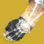
「烈日手雷」自带护甲模组「快速球」效果，持续时间延长 2 秒。
充能近战击杀后：
获得「炎阳护腕待用」，持续 5 秒。
待用期间使用手雷激活「炎阳护腕」，持续 4 秒；生效期间，「烈日手雷」基础回复速率额外 +20000%。
技能回转改动的受害者之一，一次只能转 4 颗雷，割草还是不错的
摧毁缠结时：
生成 2 只线虫。
线虫命中施加瓦解。
无意义的线虫上拆解和十秒一次的缠结产线虫，几乎没有任何作用
冲刺 1.5 秒后：
将手中武器弹匣补满 100%（或将热量清空 100%）。
机动性加成：
冲刺速度由 8 提高至 8.5 米/秒；滑铲距离由 6.5 提高至 8.5 米；蹲行速度不低于 4 米/秒。
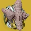
死亡阵痛的触发与衰减：
用与手雷同元素的武器击杀，获得 1 层死亡阵痛，最多 5 层。
新层数获得后等待 2 秒再开始倒计时；到期只减少 1 层，不清空全部层数。
盟友手雷回能：
死亡阵痛生效时使用手雷，20 米内的盟友获得「感受烈焰」，持续 5 秒（期间手雷回复速度 ×10）。
输出真理之容在输出上的典型且唯一的例子是电浆雷骑士之火 solo 大师看护人
割草除了提升手雷伤害，真理之容还可以提升被视为手雷的炮台伤害，电术搭配骑士之火的玩法依旧不错
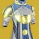
放置裂痕 1 秒后：
触发电弧冲击波，在 7.5 米内造成 360 [100] 点伤害并打断动作（随后每 5 秒再触发一次直至裂痕消失）。
被冲击波击杀的目标爆炸造成 180 [100?] 点伤害。
装备电弧超能技能时，爆炸与冲击波附带致盲。
高难辐径晚星搭配贪婪 4 给予的致盲和奶阵回转是电术少数可以在高难生存下来的选择，与药剂师神器很搭配
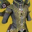
常驻被动：
装备烈日超能技能时，空中被动获得 +50 空中效率。
空中机瞄触发「晨星圣典」：
悬停 2.8 秒，战斗人员瞄准自己的精度降低；命中可延长时长（最长 ? 秒）。
生效期间获得 15% 伤害抗性与 25% 受击抖动抗性。
悬停期间烈日武器击杀：
获得 1 层恢复（持续 ? 秒），并补满收起的武器。
在空中瞄准时会给予像增幅那样的战斗人员精度下降效果，并且每次烈日武器击杀都会重新刷新恢复 buff 到最高时间，击杀填装武器效果可搭配双增伤或弹药经济武器。
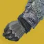
督军印记的获得与衰减：
近战或偃月近战击杀获得 1 层督军印记，终结技获得 3 层，最多 10 层。
督军印记逐层衰减（每层持续 4.75 秒）；终结技在起手时刷新持续时间；灼烧持续伤害击杀不增加层数。
满层预备与激活狂怒：
叠至或刷新至 10 层时返还一次近战充能并进入「督军狂怒待用」（持续 8 秒，未触发则退回 10 层）。
待用期间发动近战或偃月近战，获得持续 10 秒强化：近战伤害 +400%，近战动作时长 ×0.8，近战回复速度 ×38.4。
狂怒期间不可累积印记；结束后印记清零。
输出狡诈严冬的使用需要建立在一定的游戏基础上，它代表着术士甚至是命运 2 的上限，使用火歌星界之火能够实现单人 1.7w 的 DPS 水平，如何操作可自行查询这里不再赘述，我只想强调一些误区：星界之火是纯粹的近战，无需叠加超能属性，又因为火歌会提供 100 的近战手雷职业属性，所以只需要让近战达到 100 即可，近战是不存在点燃倍率这一说法的，所以带火炮台没有任何问题；由于存在某些代码问题，只需要站在奶阵中就可以吃到护盾粉碎，注意这跟奶阵的蓝盾没有任何关系，即使蓝盾被打掉增伤依旧存在。触发护盾粉碎的方式还有神器风寒和泡泡偃月
高难在高难中基本搭配棱镜闪电激涌星象使用，每一个战斗人员都是叠层资源，需要合理利用规划，经常适用的神器有：数据盘/药剂包/石板，数据盘经常携带吞噬星象和堡垒追求极限的推图时间，但因为缺乏减伤很考验机师的操作水平；药剂包则依靠冰粪坑冰霜护甲兜底，第二个星象可随意选择；石板则依靠编织者的线虫获得织造铠甲。叠层有一些小技巧：终结技的判定时间比终结技的动画还要略长一些，在终结技的判定时间内释放的任何伤害击杀都会被视作终结技击杀，比如神器弱化波、违抗琢面、被终结战斗人员身上释放的拆解射弹，在终结技结束后秒接巴掌击杀可以再叠 3 层；目前已知的 凯旋纪念 一击制胜、27赛季 方阵爆破、回响赛季 溅射惊喜、23赛季 全能打击、18赛季 火箭之拳，在动画结束后的判定时间要更长，能够做到秒接技能和武器叠层。
永劫系异域三职业通用，效果由所选教派决定。下文的「永劫盟友」指同样装备了永劫系异域的队友。
连续精准命中收益：
连续造成 4 次精准命中（相邻命中间隔 ≤3 秒）时，获得 +30 填装速度、0.85× 填装时长倍率与 +40? 操控性，持续 10 秒。
标记敌方目标：
对、或勇士连续造成 4 次精准命中（相邻命中间隔 ≤3 秒），或眩晕一名勇士时，标记该战斗人员 30 秒（不可刷新）。
被标记目标向全队高亮显示 X 标志；受到盟友的伤害提高 20%（与任何加成叠加）。
首次标记的盟友收益：
首次标记目标时，? 米内未使用力量学派的永劫盟友在 3 秒内每秒获得固定 33.33% 手雷与近战技能能量。
精准多杀生成能量球：
造成 2 次精准多杀后，生成一枚能量球供盟友拾取（提供 3.57%超能能量）。
其他永劫盟友超能收益：
用终结技处决上述目标时，未使用洞察学派的永劫盟友获得 ?%超能能量。
附近重伤盟友收益：
10 米内处于重伤的盟友对战斗人员获得 25% 伤害抗性。
未使用活力学派的永劫盟友每秒额外获得 15%职业技能能量（脱离重伤后增益保留 1 秒）。
三件异域职业物品的 Perk 都仅在装备棱镜分支职业时生效，以下所有之灵同样受此限制。
异域职业物品的属性分布固定：左栏之灵决定护甲原型，右栏之灵提供第三属性。属性重叠时，按DDC 职业金原表右栏图示从高到低的优先级确定第三属性；具体原型、属性及优先次序请查看原表对应之灵的图示。
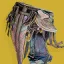
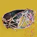
三件职业物品都能开出用充能近战击杀时：
获得虚空隐身，持续 7 秒。
使用终结技时：
获得虚空隐身，持续 10 秒。
光能盛宴的累积与保留：
超能已满时拾取能量球，获得 1 层光能盛宴，最多 6 层。
换成另一件同样带有噬星者之灵的异域职业物品时，当前层数保留。
强化技能的触发：
使用手雷或职业技能，或造成充能近战伤害时，另外两项技能各获得 1 层强化，持续 5 秒，最多 2 层。
（例如：造成组合打击伤害后，手雷与职业技能回复加快。）
各技能独立计时：
界面上的层数显示与实际生效的技能回复并不一致。
接前例：近战赋予的 1 层强化未到期时使用职业技能，手雷强化升至 2 层并刷新时长；近战获得 1 层强化，持续 5 秒。
职业技能已有的强化不会刷新，尽管界面显示强化 2 层。
15 米内有至少 3 名敌方目标时：
获得生物强化，持续 5 秒。
生物强化效果：
近战伤害提高 165% [100%]；偃月近战伤害提高 100%。
对使用星相「闪电激涌」时加成降低。
常驻被动：
提供 +35 操控性。
死亡阵痛的触发与衰减：
用与手雷同元素的武器击杀，获得 1 层死亡阵痛，最多 5 层。
每层提高手雷技能伤害，并每秒额外回复手雷技能能量。新层数获得后等待 2 秒再开始倒计时；到期只减少 1 层，不清空全部层数。
用充能近战击杀时：
触发点燃。
该点燃不受近战伤害加成影响。
常驻被动：
额外提供一次职业技能充能。
超能命中与击杀时：
返还超能能量，最多返还 50%超能能量。
超能「丝线打击」与黄金枪最多返还 30%超能能量。
使用手雷技能时：
获得织造铠甲，持续 10 秒。
处在暮域手雷的减速场内时：
敌方目标造成的伤害降低 50% [20%]。
自己与盟友立即获得 1 层冰霜护甲，之后每 0.5 秒再获得 1 层冰霜护甲。
脱离虚空隐身时：
获得不稳定弹药，持续 9 [3] 秒。
常驻被动：
提供 +10 稳定性与 0.?× 举枪时长倍率。
使用职业技能时：
填装全部武器，自动拾取 15 米内的弹药块，并触发填装类武器 Perk。
同时获得「幻金链甲」，持续 9 秒，期间提供 +35 稳定性与 +? 操控性。
受到近战伤害，或用充能近战命中时：
3 秒内的下一次近战命中获得交叉反击。
交叉反击效果：
基础近战与电弧近战伤害提高 400%，且攻击造成电弧伤害。
用技能对、、勇士、或造成伤害时：
获得 4 层与技能同元素的武器激涌，持续 16 [11] 秒（不可刷新）。
职业技能基础治疗：
使用职业技能时，获得 2 层治愈。
放置屏障时：
生成一道冰影墙，宽度相当于 5 块中型水晶，正中为小型水晶。
屏障冷却改按巍峨屏障的 ? 计算。
使用推进器时：
生成 2 块冰影水晶。
与异域护甲「白霜-Z」不同，不提供集结屏障的属性加成。
放置屏障或使用推进器时：
立即为自己与 12 米内视野可见的盟友回复生命值与护盾。
屏障回复 160 点生命值与 110 点护盾；推进器回复 30 点生命值。
两次治疗脉冲之间有 5 秒冷却。
治疗盟友时：
提供 ?%职业技能能量。
充能近战击杀或使用终结技时：
在敌方目标处触发动能爆炸，在 ? 米内造成最高 400 [?] 伤害。
非连锁爆炸之间有 1 秒冷却。
连锁爆炸：
充能近战击杀触发的断绝爆炸可以连锁。
连锁爆炸在 ? 米半径内最高造成 268 [?] 伤害（伤害较低，但无触发冷却）。
充能近战命中时：
目标 15 米内的敌方目标遭到落雷击中，造成 181 [50] 点电弧伤害并施加震颤。
用与超能同元素的武器击杀时：
为自己与 15? 米内的盟友赋予 1 层恢复，持续 3+1.5 秒。
两次触发之间有 3 秒冷却。
用星相「坚不可摧」格挡期间：
移动速度提高 15%。
星相「坚不可摧」结束时：
按格挡量返还手雷技能能量，从 15% 起算，达到格挡上限后最多返还 60%。
常驻被动：
额外提供一次手雷技能充能。
超能结束时：
获得 4 层与超能同元素的武器激涌，持续 30 [6?] 秒。
放置屏障时：
向前释放 3 道追踪的烈日波形（最远飞行 18.5 米），造成 480 [100] 伤害并施加 60 [30] 层灼烧。
波形命中[击杀]敌方目标时，在其脚下生成太阳黑子。
使用推进器时：
释放烈日球，? 秒后爆炸并呈 X 形释放 4 道烈日波形，伤害与元素效果与屏障波形相同。
施放超能时：
完全回复生命值与手雷、近战、职业技能能量。
自己与 ? 米内的盟友获得 3 层治愈。
超能结束时：
8 秒内每秒固定提供 66% 手雷与近战技能能量。
急冻手雷强化：
急冻手雷追踪能力增强，飞行距离与速度提高 17.5%。
手雷命中回能机制：
急冻手雷、风暴手雷、线虫手雷与涡流手雷造成伤害时回复手雷技能能量（涡流手雷对同一目标两次返能约有 0.8 秒冷却）。
治愈手雷治疗自己或盟友时回复固定量手雷技能能量。
站在自己创造的裂痕内时：
为其中的提供 25% [5%] 伤害抗性。
裂痕与超能「光焰之井」重叠或位于其中时，站在裂痕内仍可获得该伤害抗性。
常驻被动：
额外提供一次近战技能充能。
站在自己创造的强能裂痕内时：
获得吞食，持续 11 秒；重新踏入同一个强能裂痕可刷新时长（最多刷新至 11 秒）。
吞食生效期间：
击杀提供 10%职业技能能量。
摧毁缠结时：
生成 2 只线虫。
强效腐化施加与传播：
近战命中施加强效腐化；被腐化的目标死亡时，向 5 米半径内的敌方目标传播强效腐化。
强效腐化持续伤害：
每 0.52 [0.7] 秒造成一次持续伤害，持续 10 [?] 秒（最多造成 19 [?] 次伤害）。
每次造成 32 [5?] 点动能伤害，整段合计 640 [?] 伤害。
放置裂痕 1 秒后：
触发一道电弧冲击波，在 7.5 米半径内造成 400 [100] 点电弧伤害并打断动作。
之后每 5 秒再触发一道，直至裂痕消失。
装备电弧超能技能时，冲击波附带致盲。